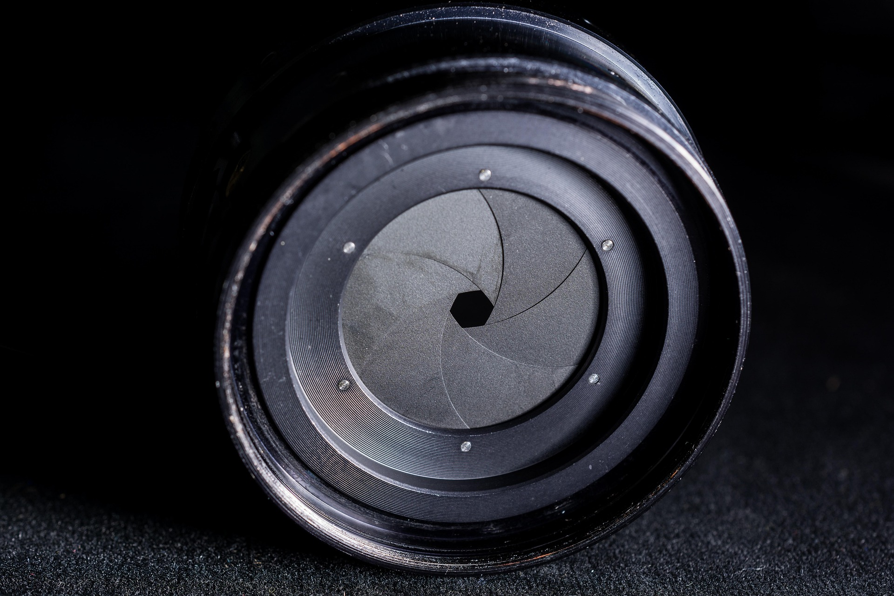
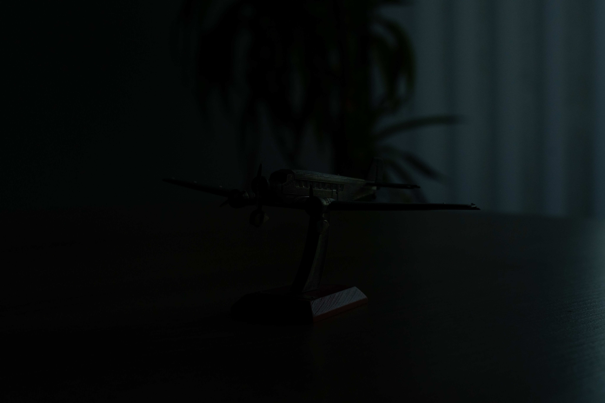
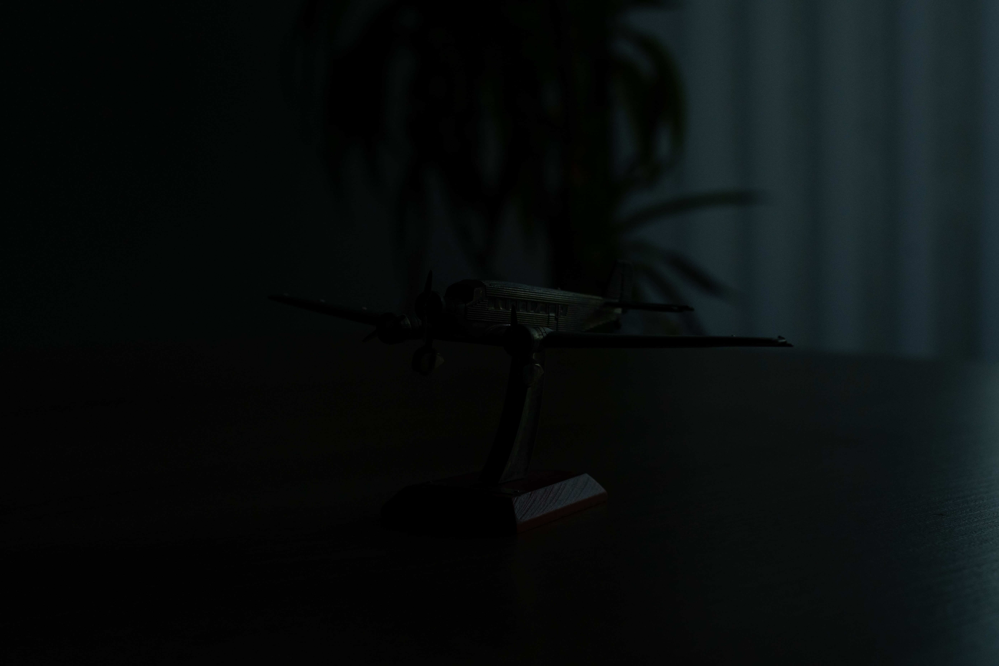
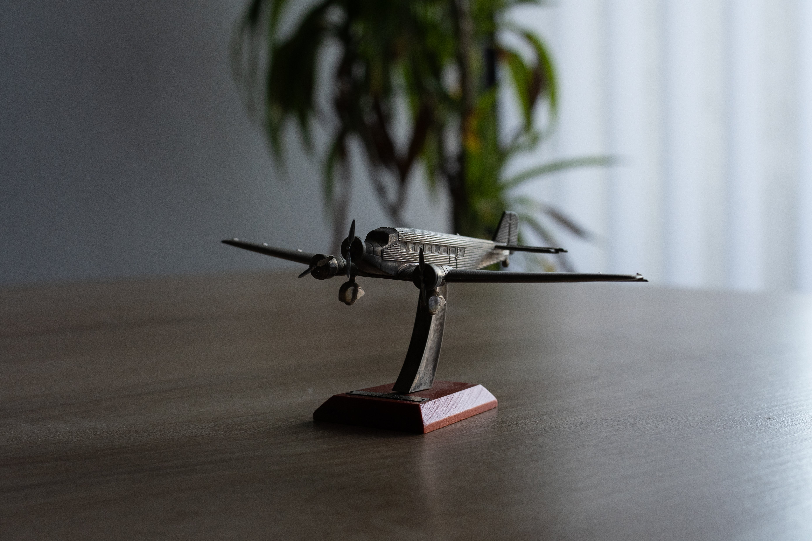
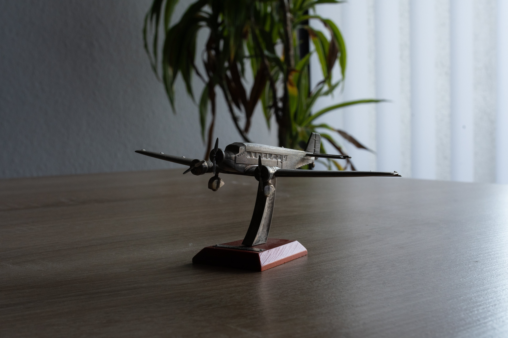
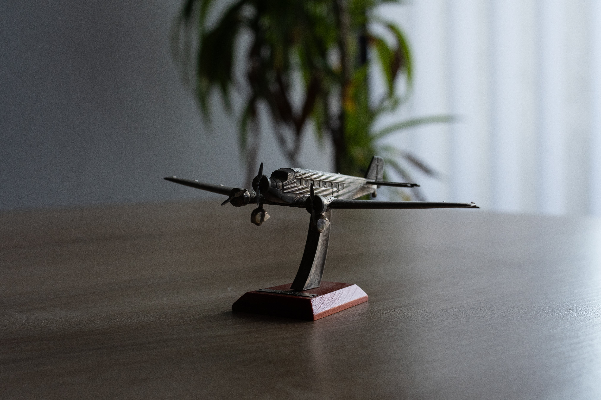
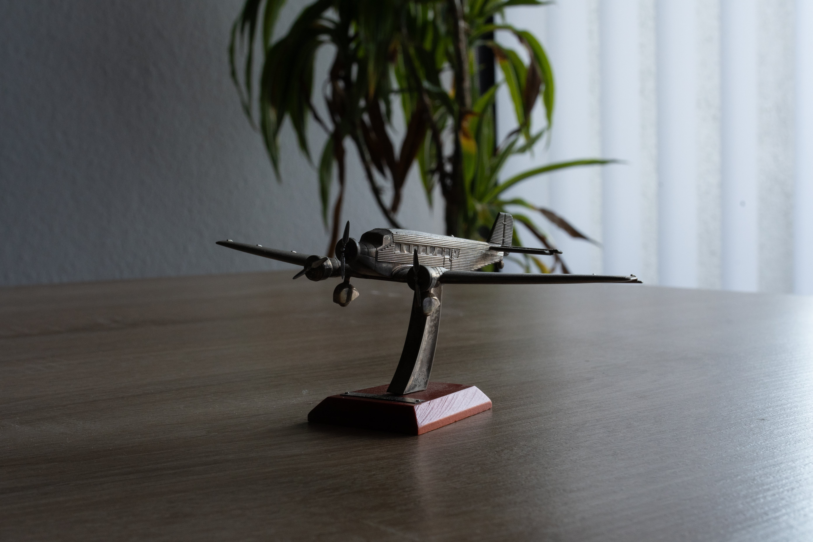
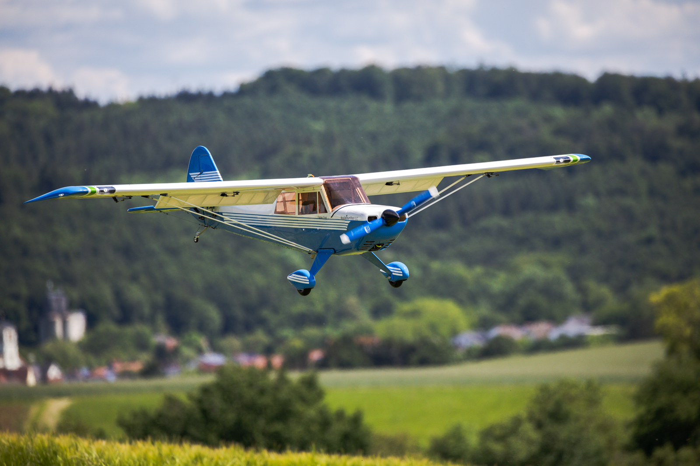
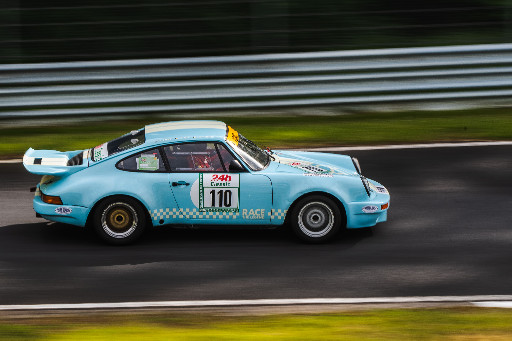
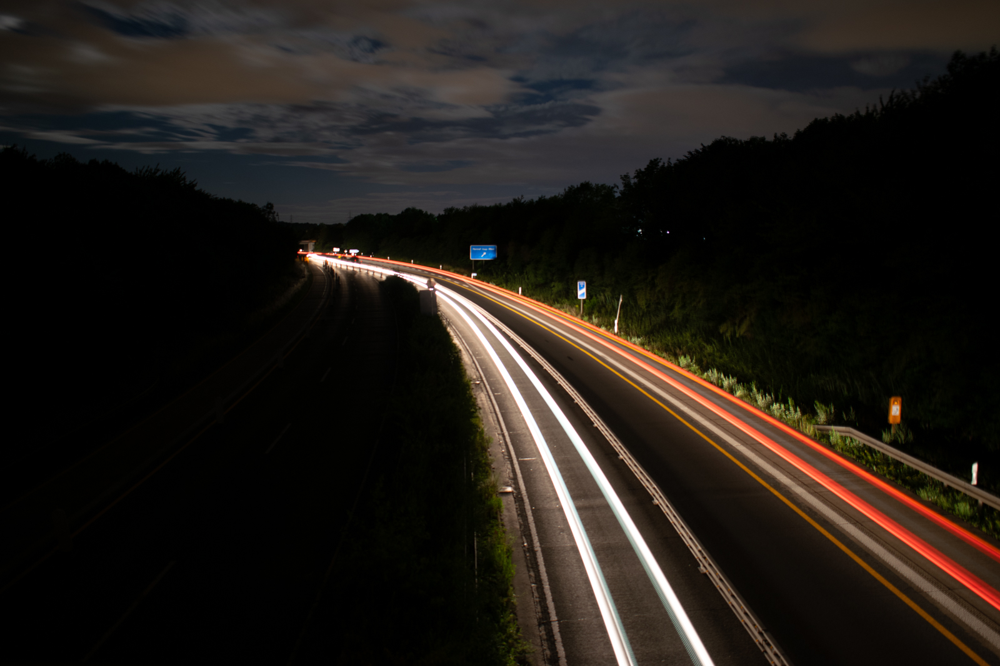

Kapitel 02 - Grundlagen
Zur Gestaltung eines Fotos stehen dem Fotografen grundsätzlich vier wichtige Werkzeuge zur Verfügung: Die Blende, die Belichtungszeit, der ISO-Wert und die Brennweite. Diese Bestandteile beeinflussen sich gegenseitig und eine Kombination aus allem macht das Foto aus.
Blende
Man kann sich die Blende einer Kamera wie die Pupille im menschlichen Auge vorstellen. Sie beeinflusst maßgeblich wie viel Licht durch das Objektiv auf den Kamerasensor fällt. Die Blende sitzt in der Regel im Objektiv hinter den Linsen und besteht aus mehreren Lamellen, die sich überlappen und eine kreisförmige Öffnung bilden. Diese Öffnung kann verkleinert und vergrößert werden, um die Lichtmenge zu regulieren. Man spricht auch von einer „offenen“ und einer „geschlossenen“ Blende.
Die genaue Öffnung einer Blende wird durch die sogenannten f-Werte angegeben. Ein kleiner f-Wert steht dabei für eine große Blendenöffnung, also einer offenen Blende (z.B. f/1.8) und ein großer f-Wert steht für eine kleine Blendenöffnung, also einer geschlossenen Blende (z.B. f/18). Diesen Wert kannst du an deiner Kamera in einen der manuellen Modi selber einstellen.
Wie du dir sicher schon gedacht hast, beeinflusst die Blendenöffnung also die Helligkeit des Bildes. Je offener die Blende ist, also je kleiner der f-Wert ist, desto heller wird das Bild. Auf der anderen Seite führt eine geschlossene Blende, also ein großer f-Wert zu einem dunkleren Bild.
 

Die Blendenöffnung hat aber auch Einfluss auf die Schärfentiefe. Das ist der Bereich vor und hinter dem fokussierten Punkt, der auf einem Bild scharf oder unscharf dargestellt wird. Du kennst sicher Porträts oder andere Bilder, auf denen der Hintergrund oder auch der Vordergrund sehr unscharf sind. Diesen Effekt nennt man auch „Bokeh“ und wir können die Stärke der Unschärfe mit der Blende beeinflussen. Je weiter die Blende geöffnet wird, desto weniger Schärfentiefe (Mehr Unschärfe) hat man im Bild und je weiter die Blende geschlossen wird, desto mehr Schärfentiefe (Weniger Unschärfe) wird erzeugt.
 



Merke
Offene Blende (z.B. f/1.8): Bild wird Heller und die Schärfentiefer wird geringer, also mehr Unschärfe. Geschlossene Blende (z.B. f/16): Das Bild wird dunkler und die Schärfentiefe wird höher, also weniger Unschärfe
Belichtungszeit
Die Belichtungszeit (auch Verschlusszeit) bestimmt die Dauer, in der der Kamera-Verschluss (Shutter) geöffnet ist und Licht auf den Sensor fällt. Sie wird in Sekunden bzw. Bruchteilen einer Sekunde angegeben und reicht von sehr langen Verschlusszeiten wie 30 Sekunden bis hin zu sehr kurzen Verschlusszeiten wie 1/2000 Sekunde. Es liegt auf der Hand, dass auch die Belichtungszeit Einfluss auf die Helligkeit des Bildes nimmt. Bei einer längeren Belichtungszeit fällt auch mehr Licht auf den Sensor, was das Bild heller macht. Umgekehrt wird das Bild dunkler, wenn die Zeit verkürzt wird.
Mit dieser Einstellung lassen sich aber auch viele gestalterische Konzepte umsetzen. Mit kurzen Belichtungszeiten können Momente und Bewegungen regelrecht eingefroren werden. Man kann zum Beispiel Regen oder andere fließende Flüssigkeiten so ablichten, dass jeder einzelne Wassertropfen zu erkennen ist. In Bereichen, in denen sich das Motiv schnell bewegt, wie in der Sport- oder Tierfotografie lassen sich damit bestimmte Momente gestochen scharf einfangen. Es liegt in den Händen des Fotografen den Moment so zu wählen, dass eine interessante und spannende Momentaufnahme entsteht, die etwas aussagt. Aber Vorsicht: Wie wir bereits gelernt haben fällt durch eine kurze Belichtungszeit auch weniger Licht auf den Sensor. Es sollte also immer darauf geachtet werden, ausreichend Licht zur Verfügung zu haben oder man steuert mit einen der anderen hier kennengelernten Werkzeuge entgegen.
Manchmal möchte man aber nicht einen einzigen Moment, sondern gerade eine bestimmte Bewegung einfangen und mit dem Bild rüberbringen. Zum Beispiel möchte man in der Motorsport Fotografie die Geschwindigkeit eines fahrenden Rennwagens veranschaulichen. Dies gelingt mit der sogenannten Bewegungsunschärfe, für die unter anderem eine lange Belichtungszeit nötig ist. Dabei ist das Motiv scharf, während die Umgebung in Fahrtrichtung verschwimmt:
Diese Art von Fotos nennt man auch „Mitzieher“ oder engl. „panning shots“ und wir werden uns diese Technik in Kapitel 5 näher anschauen.
Eine anderer kreativer Ansatz ist es lange Belichtungszeiten mit sich bewegenden Lichtquellen zu kombinieren. Diese zeichnen dabei ihre Bewegung als leuchtende Linien auf das Bild. Eine sehr eindrucksvolle und leicht umsetzbare Möglichkeit bieten Straßen oder Autobahnen bei Nacht, auf denen Fahrzeuge unterwegs sind:
Je länger die Belichtungszeit ist, desto stärker wirken sich die kleinsten Bewegungen an der Kamera auf das Bild aus. Das bedeutet, dass die Gefahr steigt, dass das Bild verwackelt, wenn wir aus der Hand fotografieren. Das Beispiel Foto oben von der Autobahn wurde mit einer Belichtungszeit von 30 Sekunden aufgenommen, womit es unmöglich ist ein wackelfreies Bild aus der freien Hand zu schießen. In diesem Fall ist ein Stativ nötig, welches wir uns neben anderem Zubehör in Kapitel 6 anschauen werden.
Reziprokenregel
Die Reziprokenregel besagt, dass die maximale Belichtungszeit, mit der ein Foto wackelfrei aus der Hand geschossen werden kann, immer dem Kehrwert der effektiven Brennweite entspricht. Wenn du also mit einer Brennweite von 50mm fotografierst, dann sollte die Belichtungszeit höchstens 1/50 Sekunde betragen, um aus der Hand ein scharfes Foto schießen zu können.
ISO
Nach der Blende und der Belichtungszeit ist der ISO-Wert die dritte grundlegende Einstellung, mit der man die Belichtung des Bildes beeinflussen kann. Er gibt an, wie empfindlich der Bildsensor der Kamera auf Licht reagiert. Diese wird in konkreten Zahlen-Werten angegeben, wobei niedrige Werte für eine geringe Lichtempfindlichkeit stehen und umgekehrt hohe Werte für eine hohe Lichtempfindlichkeit
In der Regel verwendet man ISO 100-400 bei optimalem Licht, also z.B. draußen an einem sonnigen Tag mit viel Tageslicht oder bei einer hell beleuchteten Szene. ISO-Werte zwischen 400 und 1600 verwendet man oft an bewölkten Tagen oder bei Innenaufnahmen mit nur mäßigem Licht und höhere Werte kommen nur bei schlechten Lichtverhältnissen zum Einsatz. Beispielsweise in der Abenddämmerung, bei Nacht oder in sehr schlecht beleuchteten Räumen.
Wie so oft müssen wir aber auch hier abwägen und man sollte nicht einfach bedenkenlos den ISO-Wert hochdrehen. Denn mit steigender Empfindlichkeit verschlechtert sich die Bildqualität teilweise immens. Details gehen verloren, die Farbwiedergabe wird schlechter und es kommt zum sogenannten Bildrauschen:
Zusammenfassung
Die Belichtung eines Fotos wird durch drei Hauptfaktoren beeinflusst: Blende, Belichtungszeit und ISO-Wert. Die Blende regelt die Lichtmenge und beeinflusst die Schärfentiefe des Bildes – eine offene Blende (kleiner f-Wert) lässt mehr Licht durch und verringert die Schärfentiefe. Die Belichtungszeit bestimmt, wie lange Licht auf den Sensor fällt, was die Helligkeit und die Darstellung von Bewegungen beeinflusst. Kürzere Belichtungszeiten "frieren" Bewegungen ein, während längere Belichtungszeiten Bewegungsunschärfe erzeugen können. Der ISO-Wert steuert die Lichtempfindlichkeit des Sensors: höhere Werte sind bei schwachem Licht notwendig, können jedoch Bildrauschen verursachen. Ein ausgewogenes Zusammenspiel dieser Einstellungen führt zu optimalen Ergebnissen.